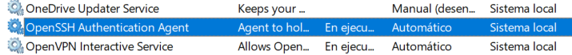
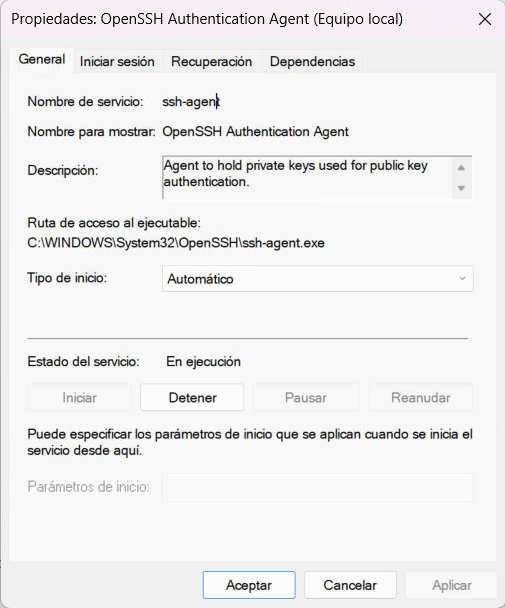

Habilitar servicio SSH
Nota: Asegúrate de que estás utilizando una versión de Windows 10 o superior para que admita la característica OpenSSH
Configurar el servicio OpenSSH Authentication Agent para que inicie automáticamente:¶
-
Dirígete a Inicio y escribe
serviciosy abre la aplicación que aparece con el mismo nombre. -
En la lista de servicios busca OpenSSH Authentication Agent y dale a
click derecho > propiedads. Si no encuentras el servicio sigue los pasos de la siguiente sección #Habilitar el servicio OpenSSH Authentication Agent

- En la ventana que emerge, elige en
Tipo de inicio: Automaticotal cual como se muestra en la imagen.

- Si el botón
Iniciares clickeable, actívalo para correr el servicio de forma inmediata sin tener que esperar a que inicie el sistema nuevamente.
Ahora, el servicio OpenSSH Authentication Agent se iniciará automáticamente cada vez que inicies Windows. Puedes usarlo para administrar tus claves SSH y autenticarte en servidores remotos de forma más segura.
Habilitar el servicio OpenSSH Authentication Agent:¶
-
Abre la aplicación "Configuración" en Windows 10. Puedes hacerlo presionando la tecla
Win + Io buscándola en el menú Inicio. -
En la ventana de Configuración, selecciona "Aplicaciones".
-
En la columna de la izquierda, haz clic en "Aplicaciones y características".
-
Busca e ingresa a la opción "Características opcionales" y selecciona "Agregar una característica".
-
Se abrirá una ventana emergente de "Características opcionales" con una lista de características disponibles. Desplázate hacia abajo hasta encontrar "Cliente OpenSSH" y selecciónalo. Luego, haz clic en el botón "Instalar".
-
Espera a que Windows instale el cliente OpenSSH. Una vez que se complete la instalación, verás un mensaje de confirmación.
Ahora puedes crear claves SSH con la ayuda de la herramienta continuando desde aquí